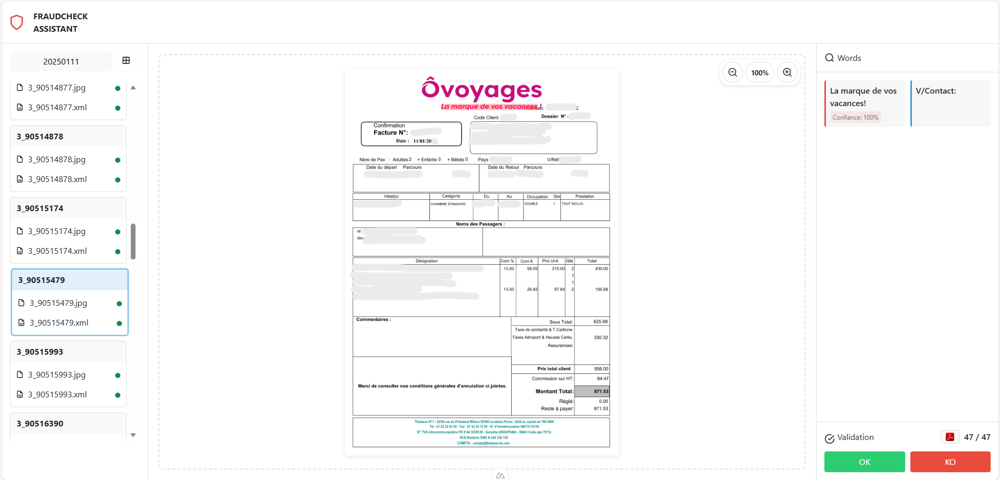
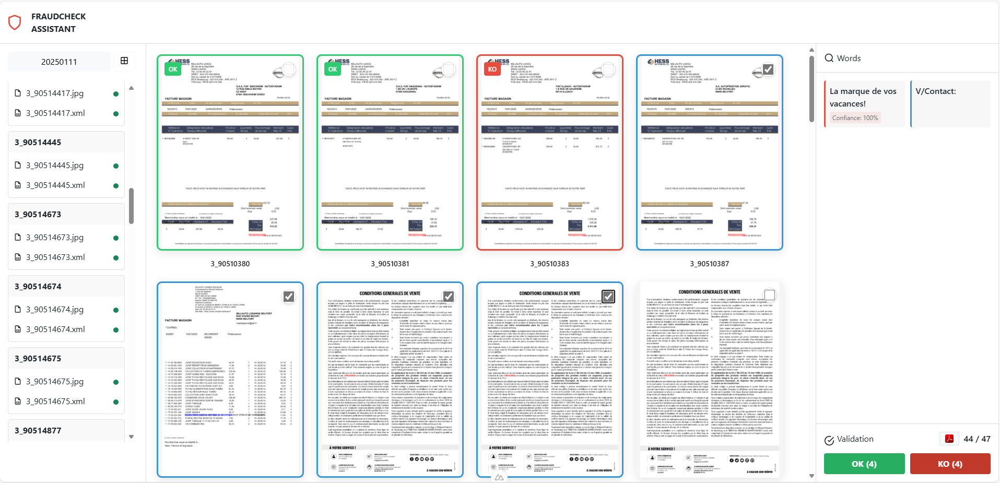
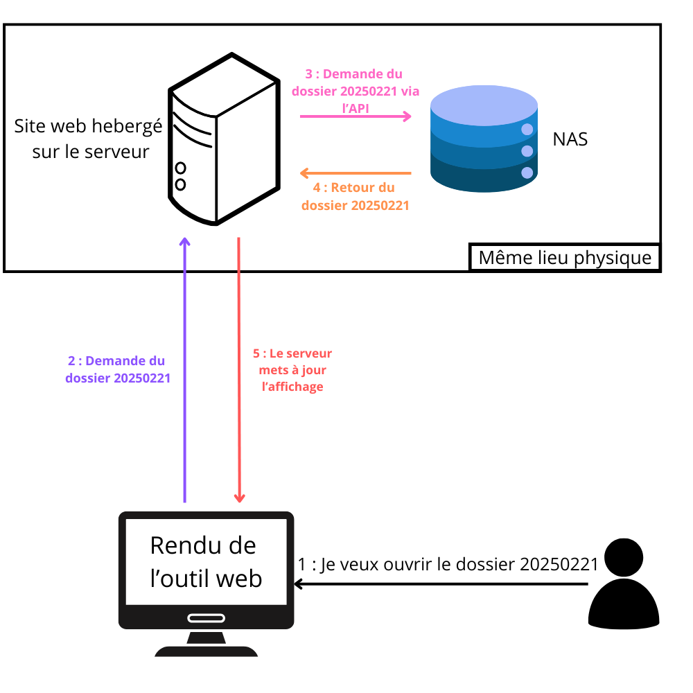
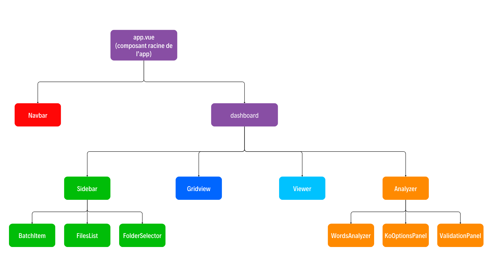

Version 2.0 - Vue.js
Refonte complète pour corriger les problèmes de performance et de maintenabilité
Améliorations Majeures
Performance
Communication directe avec le NAS, temps de chargement réduits
Architecture
Application indépendante, plus facile à maintenir et déployer. Abandon de l'API File System Access au profit d'une approche serveur
Sécurité
Hébergement sur le même serveur que le NAS, flux réseau réduits
Containerisation
Application conditionnée avec Docker, déployée via Jenkins
Aperçu de l'interface
Mode plein écran

Mode grille

Comparaison des Performances
| Critère | Version React | Version Vue.js | Amélioration |
|---|---|---|---|
| Temps de traitement par dossier | ~60 minutes | < 10 minutes | 🟢 6x plus rapide |
| Durée pour ouvrir un fichier en pleine page | 2 à 3 secondes à chaque fois | Instantanée une fois mise en cache | 🟢 Meilleure expérience utilisateur |
| Communication NAS | Indirecte | Directe | 🟢 Communication optimisée |
| Maintenabilité | Dépendance à avec "Memorize" | Application indépendante | 🟢 Meilleure maintenabilité |
| Sécurité | API File System Access, aller-retour des données | Communication directe avec le serveur | 🟢 Risques réduits |
Fonctionnalités Clés
- ✅ Travail sur des dossiers stockés sur le NAS
- ✅ Validation via des boutons simples (OK/KO)
- ✅ Traçabilité des validations dans un fichier JSON
- ✅ Reprise d'activité en cas d'interruption
- ✅ Interface responsive et intuitive
Echange de données
Le site et le NAS communique directement entre eux, ce qui accroît grandement le taux de transfert des fichiers, d'autant plus qu'ils sont situés au même endroit physiquement.

Architecture

L'architecture de l'application respecte le principe de séparation des responsabilités, chaque composant a sa propre responsabilité avec une notion de parenté entre eux.